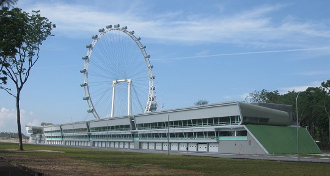

2XU Compression Run 2019
Coming back for its sixth year in Singapore, the 2XU Compression Run will be taking place from 4.30am, Sunday 7 April, Formula One Pit Building.

And simply by signing up, you'll receive a Running Singlet made with POLYGIENE Odour Technology - ensuring you'll be fresh and odour-free both during and after your Run.Take a look at what went down last year.
Event details
Race information
- Date : 7 April 2019
- Time: 4:30AM
- Venue: F1 Pit Building
- Email: info@2xucompressionrun.com.sg
Flag off times
| Race Categories | Flag-off Time | Cut-off Time |
|---|---|---|
| 21.1km | 4:30am | 4 Hours |
| 10km | 6:30am | 2.5 Hours |
| 3km | 8:00am | 1.5 Hours |
Runner's Entitlement
- 2XU Singlet
- 2XU Finisher T-shirt for 21km finishers
- Finisher Medal
Competitive Prizes
| 1st | 2nd | 3rd |
|---|---|---|
| 21.1km | 10km | 5km |
| $700 | $500 | $300 |
| $500 | $300 | $150 |
| $300 | $200 | $100 |
All results and rankings will be based on the "Gun Time".
Runners competing for top prizes must start in the first wave and assemble in front of the check-in area.
"Net Time" will be provided to runners in the 2XU Compression Run website 3 working days after the race.